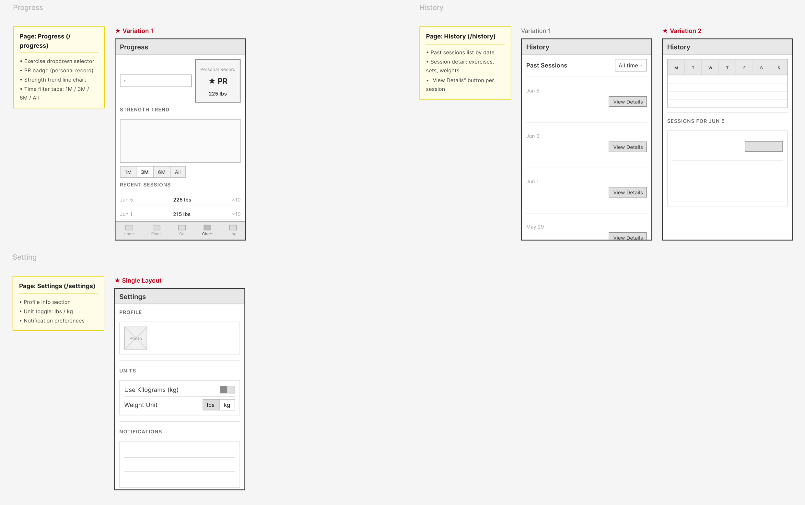
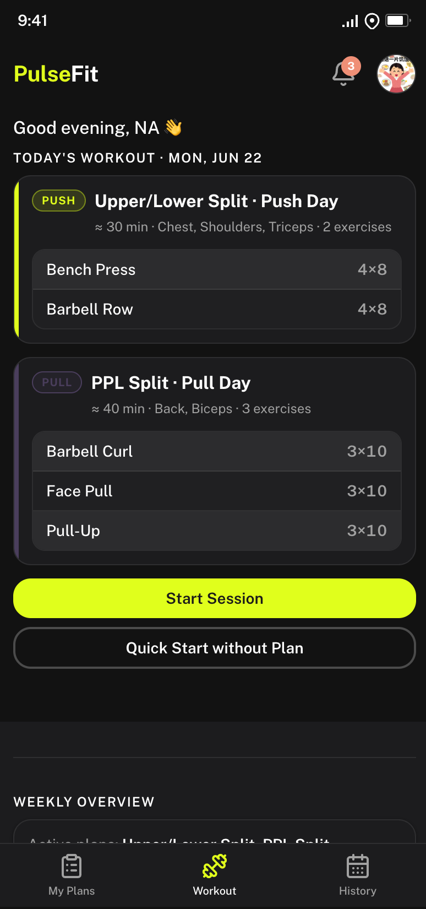
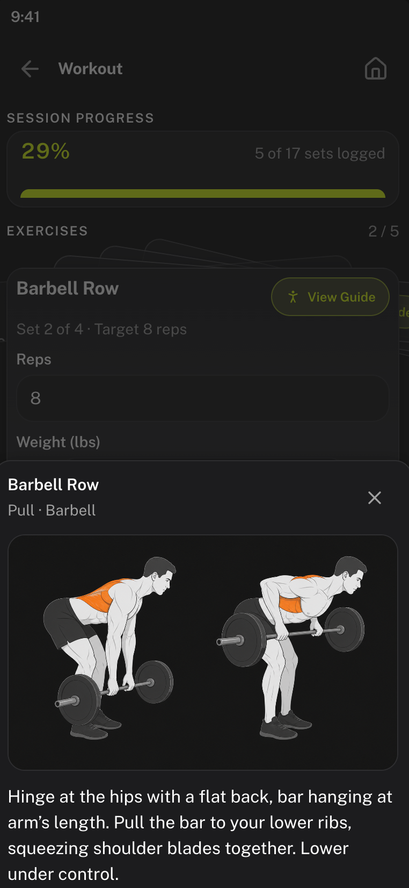
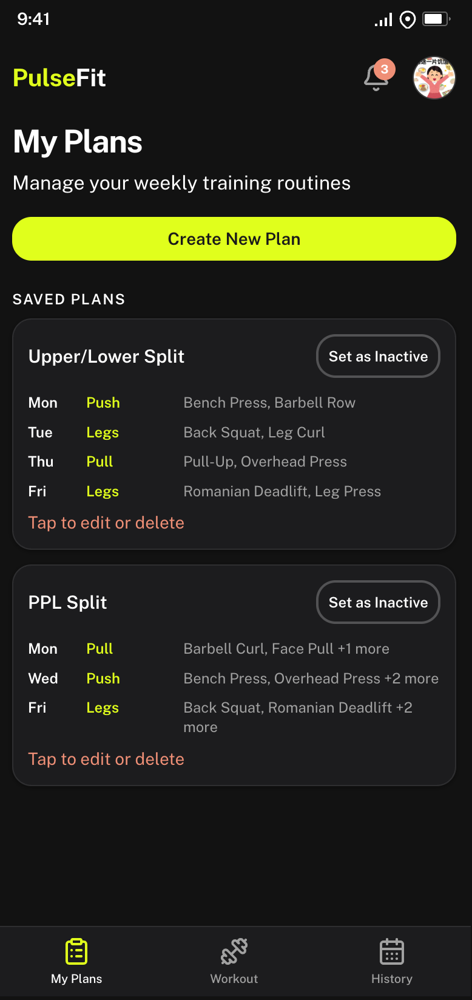
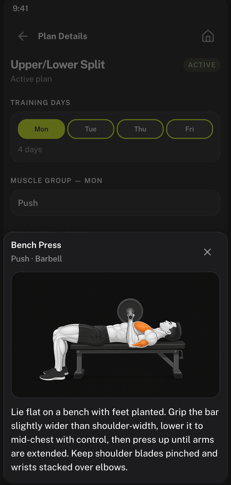

PulseFit is a mobile-first fitness planner I designed and built for ARTGR 5840's final project. The app helps lifters plan weekly routines, log sets and reps during live workouts, and track strength progress over time. I owned the full stack — product flows, dark-theme UI system, React front end, and Supabase data layer — with a seeded demo mode so the experience works without a live backend.
Challenge
Generic fitness apps often bury planning and logging under cluttered navigation. I needed a focused phone-native experience that could still support real user accounts, persistent plans, and meaningful progress data. The constraints were tight: every screen had to follow a strict DESIGN.md (neon yellow on charcoal, one primary CTA per view, 390×844 phone viewport), ship across eight core routes, and remain usable in demo mode when Supabase credentials aren't configured.
Solution
I shipped a React + TypeScript app with eight routes — home, plans, plan editor, live session, progress, history, settings, and auth — wrapped in a phone shell with a fixed tab bar. Users create multi-day workout plans with muscle-group assignments and exercise catalogs, activate plans to populate a weekly overview, then start sessions from a card-deck UI that supports swipe navigation, weight/rep logging, and inline exercise guides. Progress and history surfaces pull from logged sessions to show PR badges, Recharts strength trends, and expandable session detail. A centralized mock dataset seeds realistic demo data on first sign-in so reviewers can explore the full flow immediately.
Process
1Design System
2User Flows
3Component Build
4Data Layer
I started from PLAN.md user flows and wired blank pages with React Router, Radix UI, Tailwind CSS, and Framer Motion. The design system came first — semantic tokens in tokens.css, component rules in styles.css, and a reference screen to validate every state before building features. I layered Supabase auth and Postgres tables for plans, sessions, and profiles, then added a demoStore fallback that mirrors the same data shape when VITE_USE_MOCK_DATA is enabled. Session logging received the most iteration: the exercise card deck uses a fan-stack layout with swipe gestures, onboarding tips for form guides, and smart defaults from the user's last logged set. Notifications, unit preferences (lbs/kg), and profile settings rounded out the experience.
Sketching
Early wireframes explored homepage layouts, plan management, multi-step plan creation, and the live session logging flow. Starred variants became the baseline for high-fidelity screens.
Core flows — home, plans, editor, session

Progress, history, and settings
Information architecture
Eight routes map to distinct jobs — plan, log, track, and configure — with shared navigation between Home, Plans, and History. Each page section maps to a stable DOM anchor for testing and AI-assisted generation.
Route map and section inventory from PLAN.md
Visual development
Mood-board research balanced high-energy fitness UI references with a restrained dark palette. Neon yellow became the primary action color; orange handles secondary emphasis and count badges without competing with the main CTA.
Reference apps, palette exploration, and type direction
Style guide
PulseFit uses a dark-theme token system — charcoal surfaces, neon yellow primary actions, and Public Sans across all text. Components share one radius and a border-plus-shadow elevation model.
Color palette
Charcoal · bg.base
Neon · accent.primary
Orange · accent.secondary
White · text.primary
Typography
PulseFit
Section heading · 20px bold
Body copy uses Public Sans at 16px regular with comfortable line height for session logging and plan editing.
Components
Start workoutQuick logPR
Gallery
Six high-fidelity screens trace the core experience — from today's plan on the home dashboard through live logging, exercise guides, plan management, and session history.

Home — today's workout cards, quick stats, and weekly plan overviewSession — swipeable exercise deck with set logging and progress tracking

Exercise guide — inline form instructions with muscle-group diagram

My Plans — saved routines with day-by-day exercise previews

Plan preview — training-day breakdown with exercise detail modalHistory — streak metrics, time-range filters, and PR-highlighted session log
Outcomes
PulseFit demonstrates end-to-end product thinking — from structured design tokens and mobile interaction patterns to a working data model with 33 seeded exercises and 12 sessions of history. The app runs in dev with npm run dev, builds cleanly for deployment, and degrades gracefully to demo mode without backend setup. Key learnings: keeping one primary yellow CTA per screen improved scanability on dark surfaces, and matching mock data schemas to Supabase tables made the auth-to-demo transition seamless. Next steps would include rest-timer support, social sharing of PRs, and offline session caching.
Deployment
The app builds with Vite for static hosting and connects to Supabase when credentials are configured. Demo mode ships with seeded plans, sessions, and a 33-exercise catalog so reviewers can explore every route without setup. Deployed at pulsefit-planner.netlify.app.